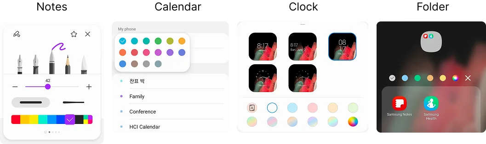
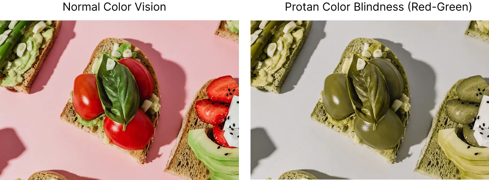
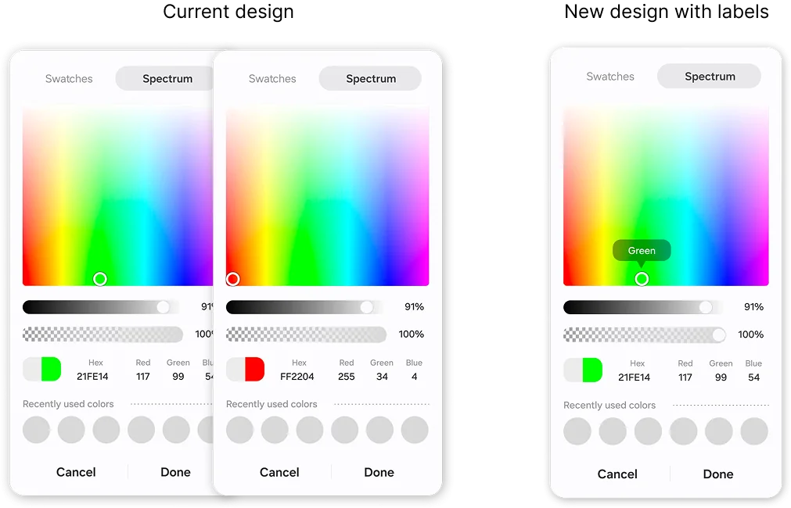
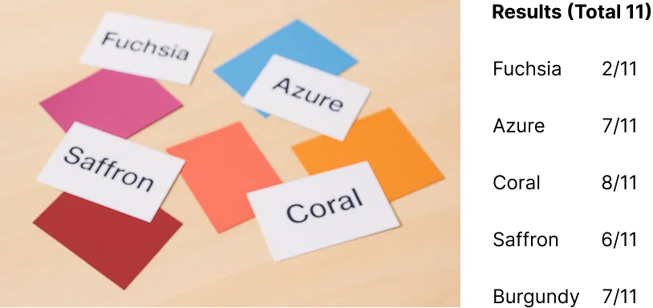
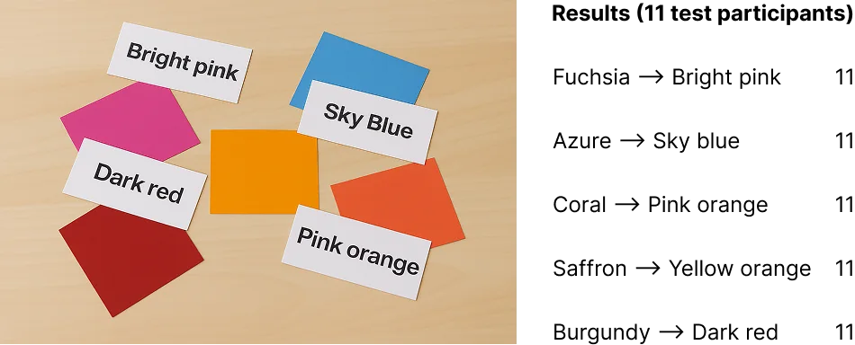
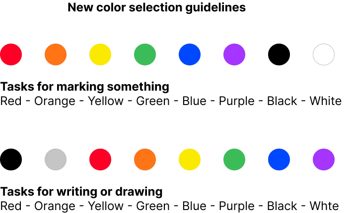
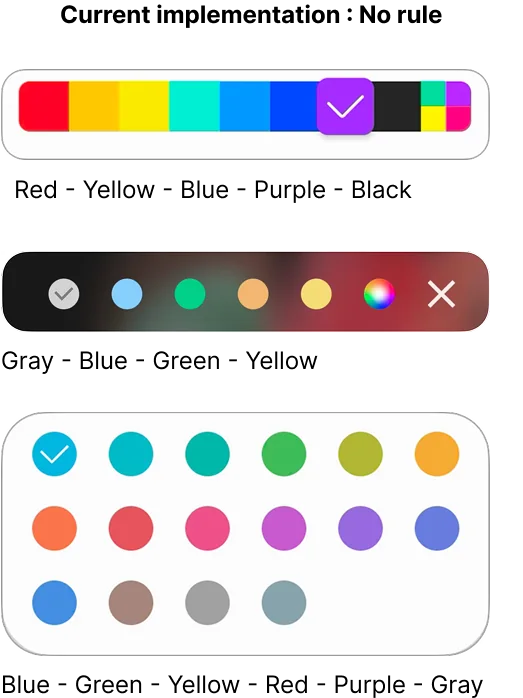

Designing for colorblind users made it better for all

Picking a color sounds trivial until you can't tell the swatches apart, or don't know what "Fuchsia" means. I redesigned Samsung's color picker with plain color names, one hue order across apps, and tooltips and audio cues for colorblind and low-vision users. Selection success rose 2.4x, and the picker became a standard component across Samsung apps.
Three kinds of friction
Auditing the color picker across Samsung apps turned up early signs of trouble: technical names like Fuchsia and Azure, the same colors in different orders from app to app, and little support for colorblind or low-vision users. We suspected the friction came from three places and set out to test it.
We ran interviews with colorblind, low-vision, and general users, card sorts matching names to swatches, and confidence tests across designs. All three sources of friction held up.

Biological
About 12 million people in the US are colorblind, and we'd received complaints that the picker didn't support them.

Knowledge
In card sorting, people struggled to match unfamiliar names to their swatches.
Systemic
Without a consistent order, people had to relearn the layout in every app.
Goal
Help every user, however they see or name color, pick the one they want without hesitating.
Show the name
Swatches had no labels, so colorblind users were guessing. I added tooltips that show each color's name, plus audio cues for screen reader users.

Use names people know
In the first test, many participants mismatched the original names. After we simplified the naming, every participant matched every color correctly.


One order everywhere
We introduced a hue-based order that follows the rainbow, from red through purple and then neutrals. It's familiar, it holds across cultures, and it means you learn the layout once.


"This tooltip really helps. Before, I often wasn't sure I'd picked the color I wanted."Colorblind participant
Lesson learned
A fix for colorblind users became a better experience for everyone.
Designing for the edges simplified the decision for the middle.